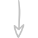

Scroll down to start your journey
The Volcano is located in Island. Island is an island situated in Western Europe but is not part of the European Union. Island is about 3.4 times bigger than Belgium. Island is well known for their beautiful landscapes. Island is a particular country because it is crossed by 2 tectonic plates, the Eurasian plate and the North American plate.
The volcano is located in the south of Island. It is part of a volcanic massif, the Eyjafjöll. We can find on this picture (picture 2) the Eyjafjallajökull on the left and the Mýrdalsjökull on the right. The Eyjafjöll is a stratovolcano ( a volcano composed of multiple layers of hardened lava and tephra ) about 700 000 years old. In the third picture we see the Eyjafjallajökull. It has an area of approximately 78 km2 and the highest point of the volcano is 1 666 meters above sea level.
The most important eruption is the one of April 14, 2010. It was a geological hazard. We can see in this animation de different stages of the cloud of ashes in Europe. The cloud became a big issue during the firts days of the eruption. The cloud paralysed most of the European Airports.